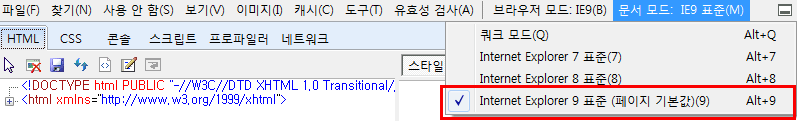
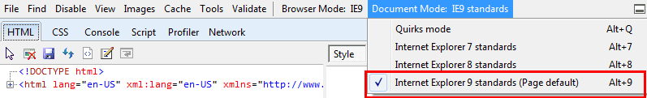
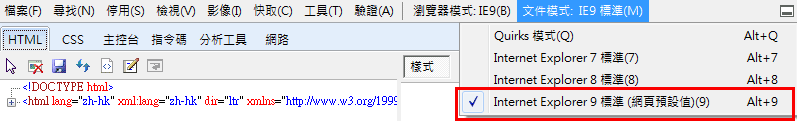

IE 문서 모드 설정 방법
1. 개발자 도구창을 엽니다. 개발자 도구창을 열려면
- 메뉴 모음의 [도구 - F12 개발자 도구(L)]
- F12 단축키
- 오른쪽 상단에 도구 단추 선택
중 한 가지 방법을 선택합니다.
2. [문서 모드]를 확인하고 Internet Explorer 9 표준으로 변경합니다.

돌아가기
Follow below steps to configure IE Document mode
1. Open the developer tool window with below
- Menu -> Tool -> Developer tool(F12)
- Shortcut key F12
- Toolbar button on upper end
Select from one of the ways
2. Change [Document mode] to Internet Explorer standard.

back
根据以下步骤配置IE文件模式
1. 打开下面的开发工具窗口
- 菜单 -> 工具 -> 开发工具(F12)
- 快捷键 F12
- 上面的工具栏按钮
选择一种方法/选择一个路径
2. 把文件模式更改为IE浏览器的标准模式”

后退